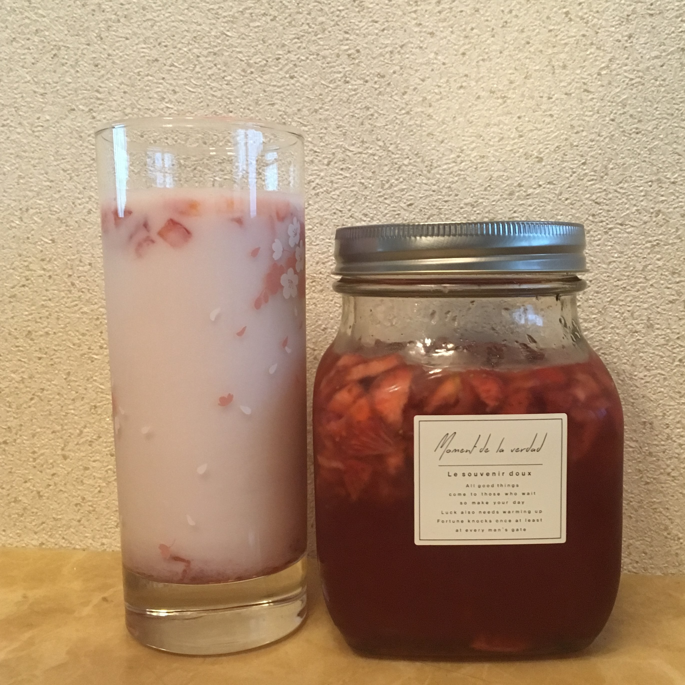
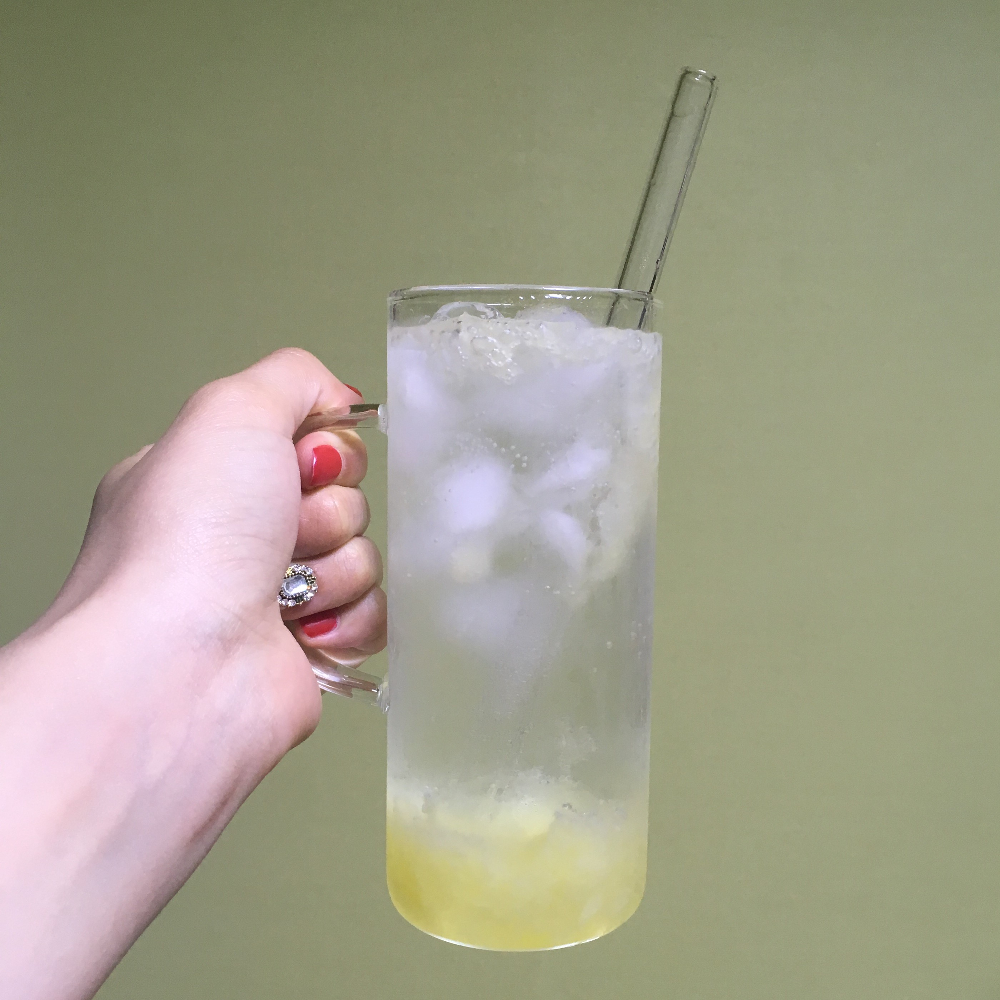
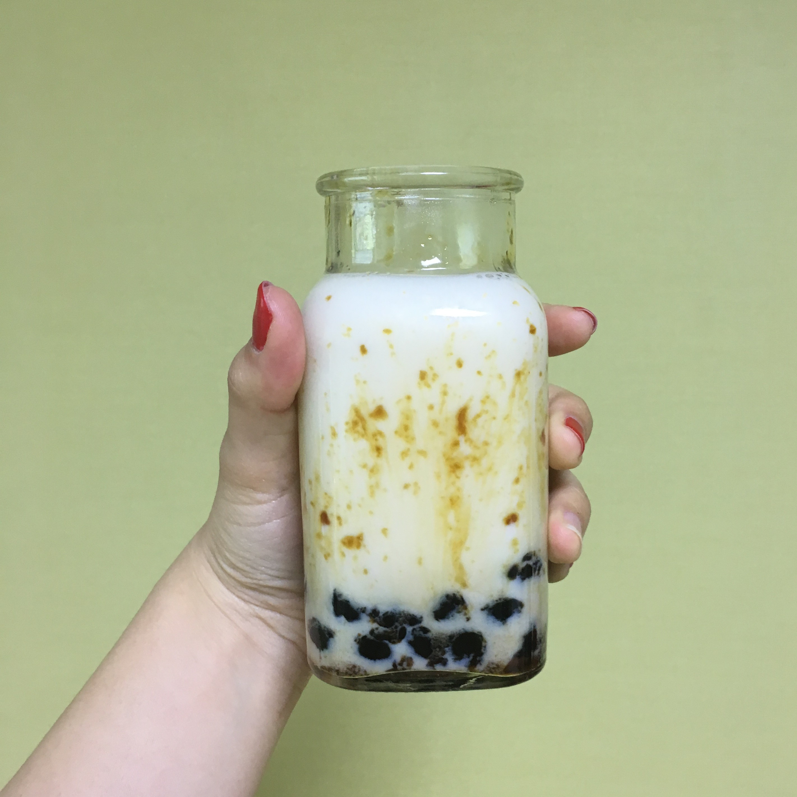
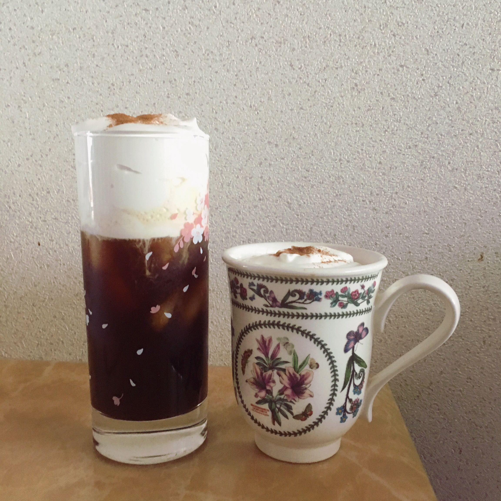

Beverage
🍊과일청🍊
①과일을 살만 바른다.
②설탕과 1대1로 섞어 살균한 유리병에 담고 마지막으로 설탕을 덮어 산소를 차단시킨다.
③우유, 탄산수 등 알맞은 음료에 타 먹는다.
 .
⚫흑당버블티⚫
①타피오카펄을 끓는 물에서 15분 익히고 15분 뜸들여 찬물에 헹군다.
②타피오카펄에 물과 흑설탕을 넣고 졸인다.
③우유에 흑당 타피오카펄과 흑설탕시럽을 넣어먹는다.
메이킹필름 보러가기🖱️
☕아인슈페너☕
①생크림에 설탕을 넣고 휘핑기로 거품을 낸다.
②아메리카노 커피를 내린다.
③아메리카노 위에 크림을 올리고 시나몬 가루를 뿌린다.
.